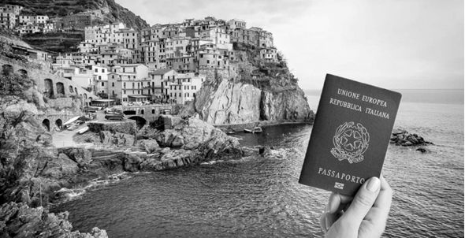

¿LA CIUDADANÍA ITALIANA ESTÁ EN RIESGO?: Actualizaciones que como descendiente debes conocer.
¡Atención descendientes! La ciudadanía italiana se encuentra actualmente en una encrucijada, enfrentando un nuevo debate sobre el porvenir de la transmisión por línea de sangre. Entonces cabe preguntarse, ¿está en riesgo la ciudadanía italiana por ius sanguinis?
Este artículo está diseñado para informarte con precisión y claridad qué se está debatiendo hoy en día sobre este tema en Italia basado en fuente verificada y confiable.
VICTORIA JUDICIAL. ASÍ TRES HERMANOS OBTUVIERON LA CIUDADANÍA ITALIANA: Detalle a continuacion sobre la historia.
Esta es la experiencia y la historia de tres hermanos, unidos por un sueño y el profundo deseo de honrar la lucha de su padre.
Alberto, Liliana y María Teresa, no podían permitir que un sistema burocrático extinguiera la esperanza.
Cada negativa del consulado era una puñalada emocional, pero el anhelo de su padre los fortaleció.
Optaron por el juicio, no solo para rendir homenaje a su padre, sino para ofrecer a sus hijos un futuro pleno de posibilidades en Europa.
PROBLEMAS MÁS COMUNES AL TRAMITAR LA CIUDADANIA ESPAÑOLA: Información importante a leer.
Un trámite de extranjería no solo da forma a nuestras circunstancias actuales debido al importante compromiso de tiempo que requiere su realización, sino que también posee el potencial de dar forma a nuestro futuro. Esto cobra especial importancia cuando solicitamos la nacionalidad española. Los problemas más comunes incluyen la recopilación de la documentación correcta, la superación de barreras burocráticas y la necesidad de cumplir con requisitos específicos que pueden variar con el tiempo. Conocer estos problemas de antemano puede ayudarnos a prepararnos mejor y aumentar nuestras posibilidades de éxito.